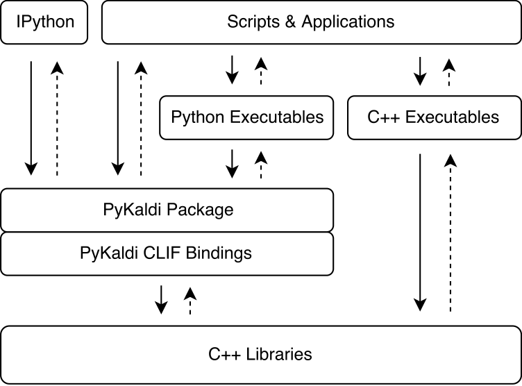

About¶
PyKaldi is more than a collection of bindings into Kaldi libraries. It is a scripting layer providing first class support for essential Kaldi and OpenFst types in Python. PyKaldi vector and matrix types are tightly integrated with NumPy. They can be seamlessly converted to NumPy arrays and vice versa without copying the underlying memory buffers. PyKaldi FST types, including Kaldi style lattices, are first class citizens in Python. The API for the user facing FST types and operations is almost entirely defined in Python mimicking the API exposed by pywrapfst, the official Python wrapper for OpenFst.
Architecture¶
PyKaldi harnesses the power of CLIF to wrap Kaldi C++ libraries using simple API descriptions. The CPython extension modules generated by CLIF can be imported in Python to interact with Kaldi. While CLIF is great for exposing the existing C++ API in Python, the wrappers do not always expose a “Pythonic” API that is easy to use from Python. To address this concern, PyKaldi extends the raw CLIF wrappers in Python (and sometimes in C++) to provide a more “Pythonic” API. Below figure illustrates where PyKaldi fits in the Kaldi software architecture.
{kind=link}
PyKaldi has a modular design which makes it easy to maintain and extend. Source files are organized in a directory tree that is a replica of the Kaldi source tree. Each directory defines a subpackage and contains only the wrapper code written for the associated Kaldi library. The wrapper code consists of:
- CLIF C++ API descriptions defining the types and functions to be wrapped and their Python API,
- C++ headers defining the shims for Kaldi code that is not compliant with the Google C++ style expected by CLIF,
- Python modules grouping together related extension modules generated with CLIF and extending the raw CLIF wrappers to provide a more “Pythonic” API.
Citation¶
You can read more about the design and technical details of PyKaldi in our paper. If you use PyKaldi in research, please cite our paper as follows:
@inproceedings{pykaldi,
title = {PyKaldi: A python wrapper for Kaldi},
author = {Doğan Can and Victor R. Martinez and Pavlos Papadopoulos and Shrikanth S. Narayanan},
booktitle={Acoustics, Speech and Signal Processing (ICASSP), 2018 IEEE International Conference on},
year = {2018},
organization = {IEEE}
}